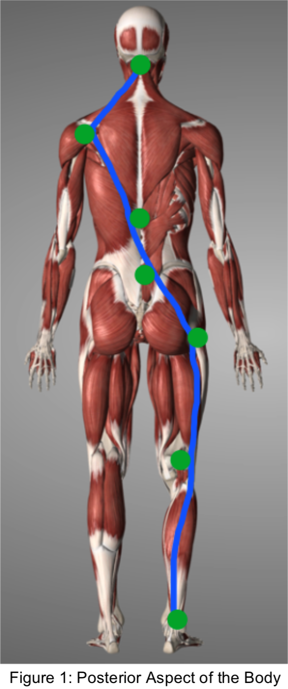

Thinking about the function of the ankle and foot, we can appreciate all the work the foot and ankle do in walking but we don’t usually think about how a foot can affect the hip, or the spine or even the head. My objective is to illustrate and apply the principles to any part of the body. Let’s take a look at how a simple change in an ankle joint impacts us...
When we look at the body, we can see that muscles have fibers and specifically, they have unique fiber direction that tells us everything we need to know about the muscle’s function. Structure and function relationship of muscles of muscles; the two ends of origin and insertion come together as a muscle contracts and approximates the two ends, typically with one end moving and the other acting as the anchor point.
Surrounding the muscles (on the outside, within, and deep to the muscle) we have a structure called fascia – a continuous connective sheath that covers the entire body. It acts as a shock absorber for tensile forces, almost like a rubber band to help keep us upright and reduce the amount of muscular effort it takes to hold us in the right posture. In addition, within the fascia, we have artery, vein, nerve and lymphatic structures, contained. Fascial orientation is, for simplicity sake, is in a very similar direction of muscles. If we look at the structure, would make sense because as the muscle moves, the structures around the muscle will also move in that direction.
But is that it? Let’s zoom out and look at the bigger picture! If we follow the direction of the fibers in Figure 1, we can see that the Achilles tendon continuous with the gastrocnemius and soleus, directed superiorly to the ankle, join the “hamstring” group. As the hamstrings flex the knee, and with the gluteal tissues extend the femur at the hip joint, we can see the Iliotibial tract (Fig 2: tendon along the blue line) sends mechanical pull towards the gluteal mass diagonally to the lumbosacral joint. From there, we can follow the direction of the thoracolumbar fascia, as it transitions through the latissimus dorsi, and the lower trapezius to the shoulder, diagonally. From the shoulder, the upper trapezius and deeper muscles of the shoulder, have fibers connecting forces back up the occiput. Figure 3 gives an idea of fiber direction of ligaments of the spine from the occiput at the head going down spine inferiorly.
The above is just one example of how forces can transfer from head to toe, and vice versa. If by chance, we see structural restriction in the ankle joint, where forces are not evenly dispersed, over time, we can develop improper force distribution that can manifest problems in areas that seem unrelated to the ankle such as lower back or even headaches if the forces reach the occiput. We can apply the same principles when we flex the body or extend the body and follow the directions of fibers and their relationships to understand where mechanical forces will travel.
If we can balance the mechanical forces by allowing motion to be restored through the joints, we can re-establish proper blood flow not only to the area of the joint, but allow other joints along the way to move with greater ease and symmetry.
In manual osteopathy, the goal is to find health where it is lost, by restoring proper motion of joints and structures and removing obstructions of nerve, artery, vein and lymphatics to the area of dysfunction. This allows allow the body’s innate self-healing and regulating mechanisms to begin. You can use this information to focus on motion throughout not only the troubled areas, but joints and structures that are connected to those areas.
For any questions on the topic, or to schedule a treatment with me, send me an email at djovnyruk@canadianosteopathy.ca